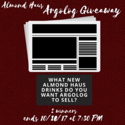

Mimi Nguyen
A dedicated, bilingual, Business Marketing leader who undertakes complex assignments, meets tight deadlines, and delivers superior performance. With a bachelor’s degree in International Management and Marketing, I contribute professional experience to developing research and marketing for financial solutions to various objectives. As a current intern for Warner Bros. Entertainment, I am exposed to all facets of the Business Resources and Systems department, which is responsible for increasing film revenues and cost controls. I have a strong knowledge and proficiency with Flash, PhotoShop, and Action Script. Due to my experiences in working a minimum wage job and marketing internships, I understand the skills it takes to work in a professional setting. My goal at Buzzfeed is to expand my knowledge and growth as a marketing businesswomen, increase engagement, and create content that will inspire younger generations.Futhermore, I have a good eye for design and typographical layout. I possess exemplary organizational skills and offering 3+ years of experience managing an administrative team within a work environment with competing demands and heavy workload. I am presently looking for a business marketing position at Buzzfeed to create videos and work on graphic design to promote on social media platforms. I have experience in conducting in-depth market research, creating distinguished marketing campaigns, and brand management services.
With various leadership roles in college, I know what it takes to be a leader and to take intiative in projects. I am very organized and have great time management. I have strong and verbal communication skills. Additionally, I can demonstrate problem solving and interpersonal skills to create long-lasting relationships. During my time as a Social Media Assistant for LifeAtUCR, I have created many relationships within the UCR community and developed content for various social media platforms, such as Instagram, Facebook, and Twitter. I specialized in designing and creating content for the Instagram stories and hosting giveaways that increased engagement. LifeAtUCR was a useful resource in helping students remain updated with the school campus and organizations. I also utilized Lightroom and various models of cameras to capture videos and photos for Instagram.
In my previous works, I am have been recognized for producing elite quality content to increase rankings, engagement, and conversion. I seek to maximize opportunities and optimize business performance. With a strong passion in brand building, I have conducted market research to leverage customer insight and creative positioning for all brands. I would like to work at Buzzfeed because as a prime example of Gen Z, I know the “likes” and “dislikes” of the common Gen Z individual. I want to represent the Gen Z population and gravitate towards that particular group because they are the primary viewers of Buzzfeed. I also enjoy pop culture and I believe that Buzzfeed is the place for me to combine my passions into a workspace. I am trained to focus on continuous improvement and quality to develop my future career in a dynamic and commercial environment. My goal is to strive to contribute creativity and brainstorming skills to meet the demanding expectations of companies and clients with effective marketing strategies.
Experience
Digital Marketing Intern
• Create film teasers using Lightroom, Photoshop, and Flash
• Build branded social media pages (Twitter, Facebook, Instagram)
• Contribute to brain-storming strategies and scripts
Barista
• Established a friendly environment by greeting and catering to customers
• Created various drinks for customers and maintain visual representations of orders
• Carried 50 lbs of inventories and assisted in processing new shipments
Social Media Assistant
• Handle and manage strong media presence on platforms such as Instagram and Snapchat to engage with users and increase exposure for University of California, Riverside
• Record, utilize, and edit promotional videos for advertising using iMovie. Lightroom, and Adobe Illustrator
• Developed online marketing campaigns, effectively increasing followers by more than 18,000 followers and driving brand awareness using Photoshop
• Successfully implement campaigns on social media platforms to execute inclusivity and outreach towards different organizations and campuses throughout the Universities of California
Education
UC Los Angeles
University of California Riverside
University of California Riverside
Portfolio
